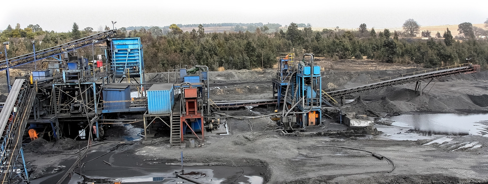

About UsО компании
Founded in 1979, Hazleton Pumps is a family-owned business located in Centurion, Gauteng, South Africa. It began by repairing submersible pumps and electric motors for mines and industry. The harsh mining conditions in South Africa caused a high failure rate in these repaired pumps, which led to the design, development and manufacture of specialised pumping solutions capable of pumping acidic liquids containing solids under a wide range of conditions.
The main cause of submersible pump failure is the pump running dry and overheating. This was overcome by filling the motor housing with oil, which serves two functions: dissipating heat from the electrical winding, and lubricating the bearings and mechanical seals.
The motor housing containing the rotor and stator is separated from the discharge pressure of the pumped liquid using a cantilever shaft design with a double-discharge volute — and by applying the latest design software, the Hippo Submersible Slurry Pump Range was born.
Manufactured as standard from specialised materials such as 28% hard-chrome castings for abrasive applications and Duplex Stainless Steel alloys (CD4MCu) castings for acidic environments, and with quality as a core objective, all Hippo Submersible Slurry Pumps are manufactured to comply with ISO 9001:2015 and IEC 60079-1.
A customer-centric approach is followed, building long-term, committed, sustainable relationships as specific, specialised pumps are designed, developed and manufactured in collaboration with customers to meet their individual requirements — with products that are reliable, low-maintenance, sustainable, efficient and offer a reasonable cost of ownership.
Компания Hazleton Pumps основана в 1979 году как семейное предприятие в городе Сентурион, провинция Гаутенг, ЮАР. Изначально компания занималась ремонтом погружных насосов и электродвигателей для горнодобывающих предприятий. Из-за тяжёлых условий эксплуатации в южноафриканских шахтах отремонтированные насосы часто выходили из строя, что привело к разработке, проектированию и производству специализированных насосных решений, способных перекачивать кислотные жидкости с содержанием твёрдых частиц в самых разных условиях.
Главная причина отказа погружных насосов — работа «на сухом ходу» и перегрев. Эта проблема была решена заполнением корпуса электродвигателя маслом, которое выполняет две функции: отводит тепло от электрической обмотки и смазывает подшипники и торцевые уплотнения.
Корпус двигателя с ротором и статором отделён от давления нагнетания перекачиваемой жидкости за счёт консольной конструкции вала с двухспиральным корпусом (double-discharge volute) — а с применением новейшего программного обеспечения для проектирования появилась на свет линейка погружных шламовых насосов Hippo.
Как правило, насосы изготавливаются из специальных материалов — например, из хромистого чугуна (28% хрома) для абразивных сред и дуплексной нержавеющей стали (CD4MCu) для кислотных сред. Качество — ключевой приоритет компании: все погружные шламовые насосы Hippo производятся в соответствии со стандартами ISO 9001:2015 и IEC 60079-1.
Компания придерживается клиентоориентированного подхода, выстраивая долгосрочные и устойчивые отношения с заказчиками: специализированные насосы разрабатываются и производятся в сотрудничестве с клиентом, под его индивидуальные требования — надёжные, простые в обслуживании, экономичные и эффективные в эксплуатации.

Our pump solutions can be custom made to your pumping requirements. Don't see a solution to your current pumping problem?
Наши насосные решения изготавливаются индивидуально под задачи заказчика. Не нашли готовое решение для своей задачи?